Digital Signal Processing MATLAB HW1 - q2
Professor: Dr. Sheikhzadeh Author: Maryam Barazande - 9723016 E-mail: maryambarazande7@gmail.com University: Amirkabir University of Technology
Contents
Clear recent data
clear; close all; clc;
RESPONSE OF DISCRETE-TIME SYSTEMS
part 1
n = 1:100; a_1 = 0.5; b1 = [4.5]; a1 = [1 -a_1]; x1 = 3 * sin(2*pi*0.2*n); y1 = filter(b1, a1, x1); figure(1); stem(n,y1); title("responce when a= "+a_1); xlabel('n'); ylabel('Amplitude');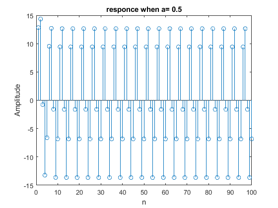
part 2
a_2 = 0.9; a_3 = 1.2; a_4 = -0.5; a2 = [1 -a_2]; a3 = [1 -a_3]; a4 = [1 -a_4]; y2 = filter(b1, a2, x1); y3 = filter(b1, a3, x1); y4 = filter(b1, a4, x1); figure(2); stem(n,y2); title("responce when a= "+a_2); xlabel('n'); ylabel('Amplitude'); figure(3); stem(n,y3); title("responce when a= "+a_3); xlabel('n'); ylabel('Amplitude'); figure(4); stem(n,y4); title("responce when a= "+a_4); xlabel('n'); ylabel('Amplitude');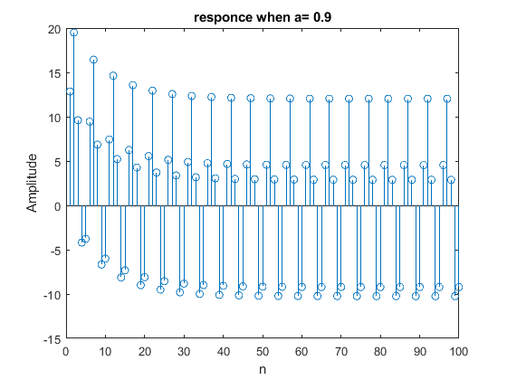 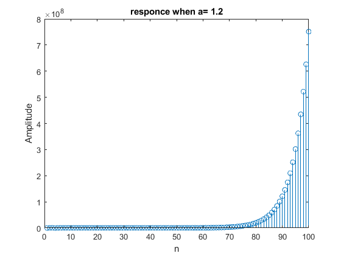 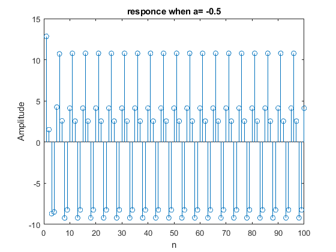
part 3
n2 = 1:50; step = ones(1,50); % stem (n,step) A1 = 16; A2 = 4; A3 = 5; A4 = 3; x_s1 = A1 * step; x_s2 = A2 * step; x_s3 = A3 * step; x_s4 = A4 * step; y_s1 = zeros(1, 50); y_s1(1) = 0.5; y_s2 = y_s1; y_s3 = y_s1; y_s4 = y_s1; for (i = 2:50) y_s1(i) = 0.5*( y_s1(i-1) + x_s1(i)/y_s1(i-1)); end for (i = 2:50) y_s2(i) = 0.5*( y_s2(i-1) + x_s2(i)/y_s2(i-1)); end for (i = 2:50) y_s3(i) = 0.5*( y_s3(i-1) + x_s3(i)/y_s3(i-1)); end for (i = 2:50) y_s4(i) = 0.5*( y_s4(i-1) + x_s4(i)/y_s4(i-1)); end figure(5); stem(n2,y_s1); title("Square root responce for A= "+A1); xlabel('n'); ylabel('Amplitude'); figure(6); stem(n2,y_s2); title("Square root responce for A= "+A2); xlabel('n'); ylabel('Amplitude'); figure(7); stem(n2,y_s3); title("Square root responce for A= "+A3); xlabel('n'); ylabel('Amplitude'); figure(8); stem(n2,y_s4); title("Square root responce for A= "+A4); xlabel('n'); ylabel('Amplitude'); % Check Sensitivity to initial Value % for A=16 let y(-1) = 10; y_s1(1) = 10; for (i = 2:50) y_s1(i) = 0.5*( y_s1(i-1) + x_s1(i)/y_s1(i-1)); end figure(9); stem(n2,y_s1); title("Square root responce for A= "+A1+" and y(-1)= 10"); xlabel('n'); ylabel('Amplitude'); % let y(-1) = 0.09; y_s1(1) = 0.09; for (i = 2:50) y_s1(i) = 0.5*( y_s1(i-1) + x_s1(i)/y_s1(i-1)); end figure(11); stem(n2,y_s1); title("Square root responce for A= "+A1+" and y(-1)= 0.09"); xlabel('n'); ylabel('Amplitude'); % let y(-1) = 0.0001; y_s1(1) = 0.0001; for (i = 2:50) y_s1(i) = 0.5*( y_s1(i-1) + x_s1(i)/y_s1(i-1)); end figure(12); stem(n2,y_s1); title("Square root responce for A= "+A1+" and y(-1)= 0.0001"); xlabel('n'); ylabel('Amplitude'); % We see it does not converge to 4 So it is sensitive!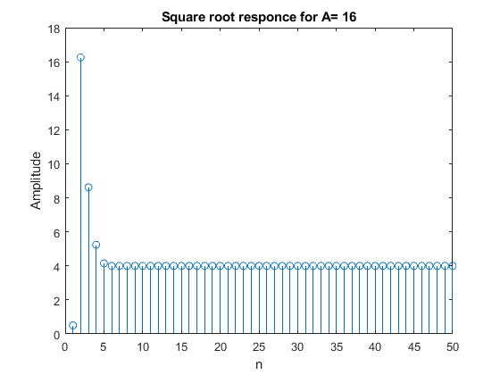 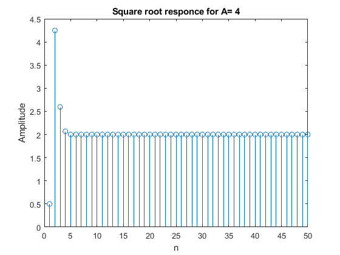 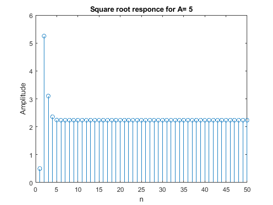 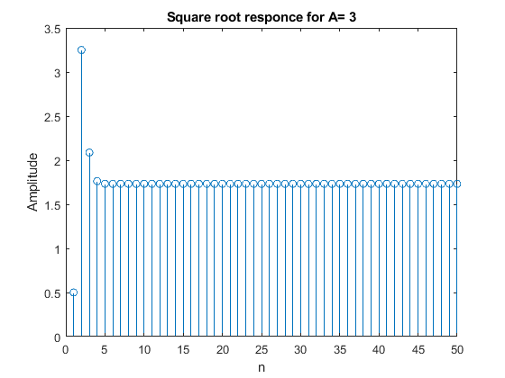 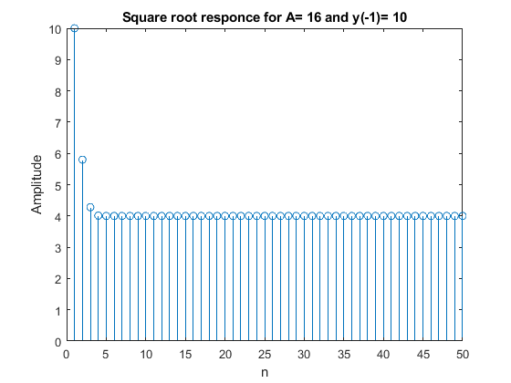 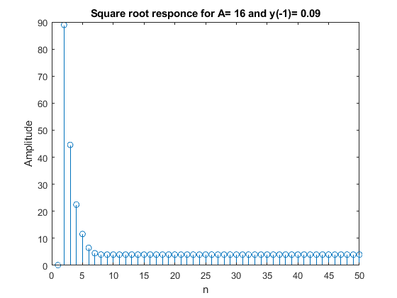 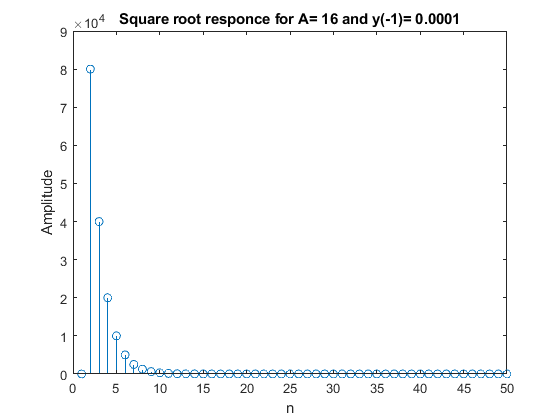